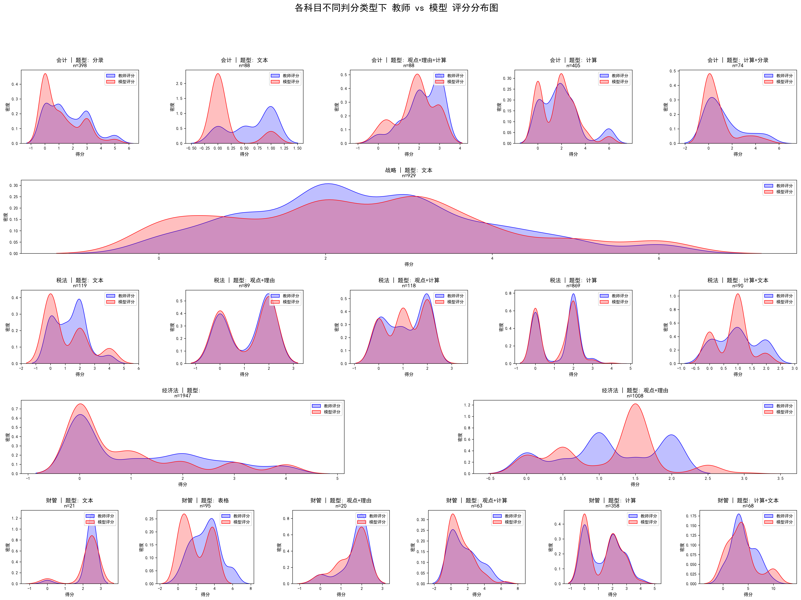
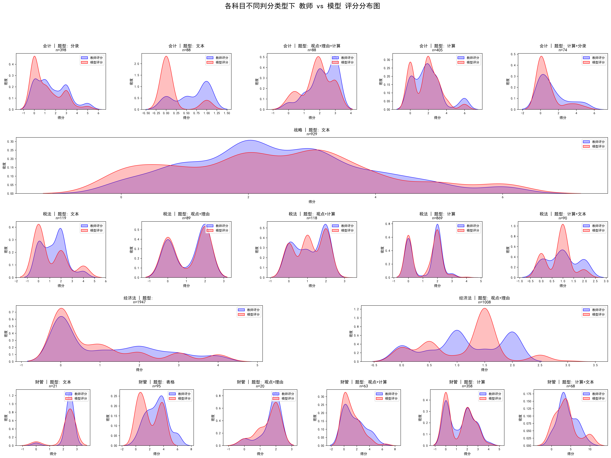

本报告汇总了模型评分与教师评分在多个维度下的误差统计分析，包括不同试卷、题型、分值下的分布可视化和一致性对比。
下面表格是从小题和大题（某些小题同属于一个大题组）两个层面统计的关于老师打分和模型打分之间分差的描述统计量
| 科目名称 | 试卷ID | 平均误差 | 误差中位数 | 误差标准差 | 最小误差 | 最大误差 | 误差绝对值均值 | 25%分位数 | 75%分位数 | 95%分位数 |
|---|---|---|---|---|---|---|---|---|---|---|
| 战略 | 1822327(1)_初版 | -0.168 | 0 | 0.937 | -5 | 3 | 0.584 | -0.5 | 0.438 | 1 |
| 1835285(1)_初版 | 0.32 | 0 | 1.266 | -3.6 | 3.8 | 0.921 | 0 | 1 | 2 | |
| 税法 | 1828855(1)_初版 | -0.137 | 0 | 0.622 | -4 | 4 | 0.285 | 0 | 0 | 0.5 |
| 1828855(2)_正确答案校队 | -0.048 | 0 | 0.639 | -3 | 4 | 0.294 | 0 | 0 | 1 | |
| 1828855(3)_修改模型占比 | -0.099 | 0 | 0.658 | -4 | 4 | 0.3 | 0 | 0 | 1 | |
| 1836221(1)_初版 | -0.162 | 0 | 0.599 | -2.5 | 2 | 0.287 | 0 | 0 | 0.25 | |
| 1836221(2)_正确答案校队 | -0.079 | 0 | 0.517 | -3 | 2.5 | 0.198 | 0 | 0 | 0.25 | |
| 1836221(3)_修改模型占比 | -0.076 | 0 | 0.523 | -3 | 4 | 0.183 | 0 | 0 | 0 | |
| 经济法 | 1822311(1)_初版 | -0.234 | 0 | 1.098 | -4 | 4 | 0.593 | -0.5 | 0 | 1 |
| 1836223(1)_初版 | 0.062 | 0 | 0.6 | -2 | 2 | 0.329 | 0 | 0.312 | 1 | |
| 1836223(2)_纠正正确答案得分 | -0.004 | 0 | 0.781 | -2 | 2.5 | 0.574 | -0.5 | 0.5 | 1.5 | |
| 财管 | 1828837(1)_初版 | -0.38 | 0 | 0.959 | -4.5 | 1.44 | 0.589 | -0.62 | 0 | 1 |
| 1828837(2)_正确答案校队 | -0.389 | 0 | 0.983 | -4.5 | 2.19 | 0.568 | -0.5 | 0 | 1 | |
| 1835723(1)_初版 | -0.352 | 0 | 1.48 | -6 | 4 | 0.917 | -1 | 0 | 1.66 | |
| 1835723(2)_正确答案校队 | -0.356 | 0 | 1.501 | -6 | 3 | 0.871 | -1 | 0 | 1.75 | |
| 1835723(3)_修改模型占比 | -0.356 | 0 | 1.503 | -6 | 3 | 0.871 | -1 | 0 | 1.75 |
| 科目名称 | 试卷ID | 平均误差 | 误差中位数 | 误差标准差 | 最小误差 | 最大误差 | 误差绝对值均值 | 25%分位数 | 75%分位数 | 95%分位数 |
|---|---|---|---|---|---|---|---|---|---|---|
| 战略 | 1822327(1)_初版 | -0.546 | 0 | 2.188 | -11.19 | 4.76 | 1.353 | -1 | 0.5 | 1.74 |
| 1835285(1)_初版 | 0.692 | 0.5 | 1.984 | -4.12 | 5 | 1.629 | -0.5 | 2 | 3.74 | |
| 税法 | 1828855(1)_初版 | -0.636 | 0 | 1.506 | -9 | 3.5 | 1.033 | -1.5 | 0 | 1 |
| 1828855(2)_正确答案校队 | -0.222 | 0 | 1.345 | -4 | 5 | 0.91 | -1 | 0 | 2 | |
| 1828855(3)_修改模型占比 | -0.459 | 0 | 1.561 | -9 | 3.5 | 0.976 | -1 | 0 | 2 | |
| 1836221(1)_初版 | -0.879 | -0.5 | 1.81 | -6.5 | 3 | 1.415 | -1.595 | 0 | 2.025 | |
| 1836221(2)_正确答案校队 | -0.428 | 0 | 1.591 | -6.5 | 4 | 0.947 | -1 | 0 | 1.525 | |
| 1836221(3)_修改模型占比 | -0.414 | 0 | 1.612 | -6.5 | 4.5 | 0.886 | -1 | 0 | 1.05 | |
| 经济法 | 1822311(1)_初版 | -1.172 | 0 | 4.036 | -13.8 | 15 | 2.524 | -3 | 0 | 3.565 |
| 1836223(1)_初版 | 0.367 | 0.5 | 1.527 | -3.5 | 4.75 | 1.178 | -0.5 | 1.5 | 3 | |
| 1836223(2)_纠正正确答案得分 | -0.024 | 0 | 1.64 | -4.5 | 3.5 | 1.295 | -1 | 1 | 2.575 | |
| 财管 | 1828837(1)_初版 | -1.044 | -0.635 | 1.784 | -7.15 | 1.5 | 1.382 | -1.8 | 0 | 1.35 |
| 1828837(2)_正确答案校队 | -1.067 | -0.5 | 1.862 | -7.5 | 1.94 | 1.393 | -1.968 | 0 | 1 | |
| 1835723(1)_初版 | -0.668 | 0 | 2.245 | -11.4 | 4 | 1.586 | -1.5 | 0.675 | 2.035 | |
| 1835723(2)_正确答案校队 | -1.351 | 0 | 4.827 | -26 | 6 | 3.029 | -4 | 1 | 5 | |
| 1835723(3)_修改模型占比 | -0.676 | 0 | 2.414 | -13 | 3 | 1.514 | -2 | 0.5 | 2.5 |
以下是从多个角度统计的模型判分准确性指标，其中精准匹配1/2/3是根据一下三种规则得到一个误差合理值或者误差合理范围，然后统计的分差在对应误差范围内的数据占比。规则如下：
规则1：取题目最小得分点和该题目分值的10%两者之间的最小值；
规则2：分差的百分之95%分位数；
规则3：获取分差均值和标准差，计算均值正负一个标准差范围。
| 科目名称 | 试卷ID | 完全匹配 | 模型偏低 | 模型偏高 | 精准匹配1 | 精准匹配2 | 精准匹配3 | 误差0.5内 | 误差0.8内 | 误差1内 | 误差分值5%内 | 误差分值10%内 | 误差分值15%内 | 老师0分_模型给分 | 老师给分_模型0分 |
|---|---|---|---|---|---|---|---|---|---|---|---|---|---|---|---|
| 战略 | 1822327(1)_初版 | 39.17% | 31.77% | 29.06% | 47.29% | 83.05% | 78.21% | 67.81% | 72.22% | 83.05% | 41.45% | 47.01% | 54.7% | 1.28% | 6.98% |
| 1835285(1)_初版 | 31.72% | 22.47% | 45.81% | 37.44% | 91.63% | 70.48% | 43.17% | 44.93% | 70.48% | 34.36% | 37.0% | 40.53% | 0.0% | 5.29% | |
| 税法 | 1828855(1)_初版 | 72.77% | 20.89% | 6.34% | 73.0% | 82.75% | 81.1% | 82.75% | 82.75% | 93.54% | 72.77% | 73.0% | 73.24% | 2.46% | 10.09% |
| 1828855(2)_正确答案校队 | 71.95% | 17.14% | 10.92% | 71.95% | 93.54% | 82.16% | 82.16% | 82.16% | 93.54% | 71.95% | 71.95% | 72.42% | 3.4% | 9.15% | |
| 1828855(3)_修改模型占比 | 72.3% | 18.54% | 9.15% | 72.3% | 92.96% | 82.39% | 82.39% | 82.39% | 92.96% | 72.3% | 72.3% | 72.65% | 3.29% | 10.45% | |
| 1836221(1)_初版 | 72.06% | 21.25% | 6.7% | 74.13% | 74.13% | 83.37% | 83.37% | 84.76% | 86.84% | 72.06% | 74.13% | 75.29% | 3.46% | 2.77% | |
| 1836221(2)_正确答案校队 | 78.52% | 15.7% | 5.77% | 80.6% | 80.6% | 88.91% | 88.91% | 91.92% | 94.46% | 78.52% | 80.6% | 80.6% | 2.54% | 2.77% | |
| 1836221(3)_修改模型占比 | 81.29% | 15.01% | 3.7% | 81.29% | 81.29% | 89.61% | 90.76% | 93.07% | 95.84% | 81.29% | 81.29% | 81.29% | 2.08% | 3.46% | |
| 经济法 | 1822311(1)_初版 | 54.49% | 29.28% | 16.23% | 58.24% | 76.94% | 83.62% | 70.11% | 74.94% | 76.94% | 54.49% | 57.52% | 60.3% | 4.31% | 10.07% |
| 1836223(1)_初版 | 61.47% | 12.78% | 25.75% | 61.47% | 95.11% | 80.83% | 80.83% | 80.83% | 95.11% | 61.47% | 61.47% | 61.84% | 3.2% | 6.95% | |
| 1836223(2)_纠正正确答案得分 | 26.71% | 40.49% | 32.8% | 26.71% | 95.61% | 76.59% | 75.85% | 76.71% | 86.46% | 26.71% | 26.71% | 27.07% | 2.8% | 6.34% | |
| 财管 | 1828837(1)_初版 | 47.88% | 39.83% | 12.29% | 55.08% | 80.93% | 78.39% | 63.98% | 69.92% | 80.93% | 50.0% | 55.08% | 58.05% | 5.08% | 6.78% |
| 1828837(2)_正确答案校队 | 53.39% | 36.02% | 10.59% | 55.08% | 84.32% | 80.51% | 68.22% | 70.76% | 84.32% | 55.93% | 57.63% | 61.86% | 3.81% | 10.59% | |
| 1835723(1)_初版 | 39.0% | 36.1% | 24.9% | 47.3% | 80.5% | 77.59% | 54.36% | 56.02% | 68.46% | 46.89% | 52.28% | 60.17% | 12.45% | 12.86% | |
| 1835723(2)_正确答案校队 | 52.7% | 29.88% | 17.43% | 52.7% | 78.84% | 75.1% | 60.17% | 60.58% | 74.27% | 54.77% | 61.0% | 67.22% | 2.9% | 22.41% | |
| 1835723(3)_修改模型占比 | 52.7% | 29.88% | 17.43% | 52.7% | 78.84% | 75.1% | 60.17% | 60.58% | 74.27% | 54.77% | 61.0% | 67.22% | 2.9% | 22.41% |
| 科目名称 | 试卷ID | 完全匹配 | 模型偏低 | 模型偏高 | 精准匹配1 | 精准匹配2 | 精准匹配3 | 误差0.5内 | 误差0.8内 | 误差1内 | 误差分值5%内 | 误差分值10%内 | 误差分值15%内 | 老师0分_模型给分 | 老师给分_模型0分 |
|---|---|---|---|---|---|---|---|---|---|---|---|---|---|---|---|
| 战略 | 1822327(1)_初版 | 16.67% | 43.06% | 40.28% | 55.09% | 76.39% | 80.56% | 47.69% | 53.7% | 66.2% | 28.24% | 55.09% | 74.07% | 0.0% | 0.46% |
| 1835285(1)_初版 | 15.24% | 28.57% | 56.19% | 45.71% | 92.38% | 68.57% | 26.67% | 28.57% | 47.62% | 26.67% | 45.71% | 51.43% | 0.0% | 0.95% | |
| 税法 | 1828855(1)_初版 | 37.5% | 47.28% | 15.22% | 63.04% | 65.76% | 80.98% | 49.46% | 50.0% | 65.76% | 45.11% | 63.04% | 73.37% | 1.09% | 2.72% |
| 1828855(2)_正确答案校队 | 36.96% | 38.59% | 24.46% | 65.76% | 91.3% | 78.8% | 52.17% | 52.17% | 69.57% | 48.37% | 65.22% | 77.17% | 0.54% | 3.8% | |
| 1828855(3)_修改模型占比 | 39.67% | 40.22% | 20.11% | 65.76% | 90.76% | 85.87% | 54.35% | 54.89% | 69.57% | 50.0% | 65.76% | 76.09% | 1.09% | 2.72% | |
| 1836221(1)_初版 | 26.25% | 51.25% | 22.5% | 56.25% | 75.0% | 72.5% | 37.5% | 45.0% | 50.0% | 37.5% | 56.25% | 73.75% | 5.0% | 3.75% | |
| 1836221(2)_正确答案校队 | 42.5% | 35.0% | 22.5% | 77.5% | 80.0% | 81.25% | 53.75% | 61.25% | 71.25% | 53.75% | 77.5% | 87.5% | 2.5% | 3.75% | |
| 1836221(3)_修改模型占比 | 55.0% | 30.0% | 15.0% | 77.5% | 71.25% | 85.0% | 65.0% | 66.25% | 71.25% | 65.0% | 77.5% | 85.0% | 2.5% | 3.75% | |
| 经济法 | 1822311(1)_初版 | 31.19% | 48.71% | 20.1% | 52.06% | 74.48% | 81.7% | 41.49% | 44.85% | 47.42% | 42.01% | 52.32% | 58.25% | 6.96% | 0.77% |
| 1836223(1)_初版 | 21.11% | 27.78% | 51.11% | 58.89% | 95.56% | 73.33% | 38.89% | 41.11% | 58.89% | 37.78% | 58.89% | 75.56% | 0.0% | 0.0% | |
| 1836223(2)_纠正正确答案得分 | 11.59% | 42.03% | 46.38% | 54.35% | 88.41% | 72.46% | 34.06% | 35.51% | 55.07% | 33.33% | 54.35% | 71.01% | 0.0% | 0.0% | |
| 财管 | 1828837(1)_初版 | 18.6% | 63.95% | 17.44% | 38.37% | 68.6% | 74.42% | 33.72% | 40.7% | 55.81% | 26.74% | 39.53% | 58.14% | 6.98% | 2.33% |
| 1828837(2)_正确答案校队 | 23.26% | 59.3% | 17.44% | 43.02% | 65.12% | 73.26% | 39.53% | 44.19% | 65.12% | 27.91% | 43.02% | 56.98% | 6.98% | 3.49% | |
| 1835723(1)_初版 | 14.96% | 49.61% | 35.43% | 30.71% | 75.59% | 77.17% | 30.71% | 33.07% | 44.09% | 28.35% | 37.8% | 58.27% | 7.87% | 3.15% | |
| 1835723(2)_正确答案校队 | 29.13% | 43.31% | 27.56% | 37.8% | 80.31% | 80.31% | 33.86% | 33.86% | 42.52% | 37.01% | 54.33% | 63.78% | 3.94% | 17.32% | |
| 1835723(3)_修改模型占比 | 29.13% | 43.31% | 27.56% | 37.8% | 80.31% | 80.31% | 42.52% | 42.52% | 58.27% | 37.01% | 54.33% | 63.78% | 3.94% | 17.32% |
以下结果是根据题目判分类型和观察模型判定错误类型及数据后总结的一些筛选规则，根据规则筛选出来的数据暂时认定为是模型判断无误的数据。
表格展示的是小题和大题层面，各科目最终版本数据的各项指标准确率和基于最终版本和筛选条件后计算的准确率结果的对比。
黑色代表两者准确率没有差异，红色代表处理后数据的准确率下降，绿色代表处理后数据的准确率上升。
筛选条件1：剔除财管中题目类型为“表格”且模型判分为0的数据（可能是学生答案没填在表格里，没法判）；
筛选条件2：财管中如果某个小题错误类型都是单位错误，暂时认定该题目模型打分和老师判分没分差；
筛选条件3：战略中有错误类型包含“正确答案已经全部匹配”字样，暂时认定该题目模型打分和老师判分没分差
| 科目名称 | 试卷ID | 完全匹配 | 模型偏低 | 模型偏高 | 精准匹配1 | 精准匹配2 | 精准匹配3 | 误差0.5内 | 误差0.8内 | 误差1内 | 误差分值5%内 | 误差分值10%内 | 误差分值15%内 | 老师0分_模型给分 | 老师给分_模型0分 |
|---|---|---|---|---|---|---|---|---|---|---|---|---|---|---|---|
| 战略 | 1822327(1)_初版 | 39.17% （44.02%） | 31.77% | 29.06% （24.22%） | 47.29% （51.57%） | 83.05% （83.33%） | 78.21% （80.34%） | 67.81% （69.94%） | 72.22% （73.79%） | 83.05% （83.33%） | 41.45% （46.3%） | 47.01% （51.28%） | 54.7% （58.55%） | 1.28% | 6.98% |
| 1835285(1)_初版 | 31.72% （38.33%） | 22.47% | 45.81% （39.21%） | 37.44% （43.61%） | 91.63% （92.51%） | 70.48% （68.72%） | 43.17% （47.58%） | 44.93% （49.34%） | 70.48% （73.13%） | 34.36% （40.97%） | 37.0% （43.17%） | 40.53% （45.37%） | 0.0% | 5.29% | |
| 税法 | 1828855(3)_修改模型占比 | 72.3% （76.64%） | 18.54% （14.44%） | 9.15% （8.92%） | 72.3% （76.64%） | 92.96% （93.19%） | 82.39% （82.75%） | 82.39% （82.75%） | 82.39% （82.75%） | 92.96% （93.19%） | 72.3% （76.64%） | 72.3% （76.64%） | 72.65% （76.88%） | 3.29% | 10.45% |
| 1836221(3)_修改模型占比 | 81.29% （92.15%） | 15.01% （4.39%） | 3.7% （3.46%） | 81.29% （92.15%） | 81.29% （92.15%） | 89.61% （92.15%） | 90.76% （94.23%） | 93.07% （94.23%） | 95.84% （96.3%） | 81.29% （92.15%） | 81.29% （92.15%） | 81.29% （92.15%） | 2.08% （1.85%） | 3.46% | |
| 经济法 | 1822311(1)_初版 | 54.49% | 29.28% | 16.23% | 58.24% | 76.94% | 83.62% | 70.11% | 74.94% | 76.94% | 54.49% | 57.52% | 60.3% | 4.31% | 10.07% |
| 1836223(2)_纠正正确答案得分 | 26.71% | 40.49% | 32.8% | 26.71% | 95.61% | 76.59% | 75.85% | 76.71% | 86.46% | 26.71% | 26.71% | 27.07% | 2.8% | 6.34% | |
| 财管 | 1828837(2)_正确答案校队 | 53.39% （64.38%） | 36.02% （27.47%） | 10.59% （8.15%） | 55.08% （64.38%） | 84.32% （75.11%） | 80.51% （83.69%） | 68.22% （74.25%） | 70.76% （74.68%） | 84.32% （88.41%） | 55.93% （65.24%） | 57.63% （65.24%） | 61.86% （67.81%） | 3.81% （3.86%） | 10.59% （9.44%） |
| 1835723(3)_修改模型占比 | 52.7% （60.55%） | 29.88% （20.64%） | 17.43% （18.81%） | 52.7% （60.55%） | 78.84% （91.74%） | 75.1% （80.73%） | 60.17% （66.97%） | 60.58% （66.97%） | 74.27% （80.73%） | 54.77% （62.84%） | 61.0% （69.72%） | 67.22% （74.77%） | 2.9% （3.21%） | 22.41% （14.22%） |
| 科目名称 | 试卷ID | 完全匹配 | 模型偏低 | 模型偏高 | 精准匹配1 | 精准匹配2 | 精准匹配3 | 误差0.5内 | 误差0.8内 | 误差1内 | 误差分值5%内 | 误差分值10%内 | 误差分值15%内 | 老师0分_模型给分 | 老师给分_模型0分 |
|---|---|---|---|---|---|---|---|---|---|---|---|---|---|---|---|
| 战略 | 1822327(1)_初版 | 16.67% （19.91%） | 43.06% （44.91%） | 40.28% （35.19%） | 55.09% （59.72%） | 76.39% （75.93%） | 80.56% （82.87%） | 47.69% （50.93%） | 53.7% （56.48%） | 66.2% （68.52%） | 28.24% （31.02%） | 55.09% （59.72%） | 74.07% （75.93%） | 0.0% | 0.46% |
| 1835285(1)_初版 | 15.24% （17.14%） | 28.57% （32.38%） | 56.19% （50.48%） | 45.71% （47.62%） | 92.38% （93.33%） | 68.57% | 26.67% （27.62%） | 28.57% | 47.62% （49.52%） | 26.67% （27.62%） | 45.71% （47.62%） | 51.43% （54.29%） | 0.0% | 0.95% | |
| 税法 | 1828855(3)_修改模型占比 | 39.67% （42.93%） | 40.22% （35.33%） | 20.11% （21.74%） | 65.76% （69.02%） | 90.76% （91.3%） | 85.87% （78.26%） | 54.35% （57.07%） | 54.89% （57.07%） | 69.57% （73.37%） | 50.0% （53.26%） | 65.76% （69.02%） | 76.09% （78.26%） | 1.09% | 2.72% |
| 1836221(3)_修改模型占比 | 55.0% （66.25%） | 30.0% （18.75%） | 15.0% | 77.5% （90.0%） | 71.25% （82.5%） | 85.0% （82.5%） | 65.0% （75.0%） | 66.25% （75.0%） | 71.25% （82.5%） | 65.0% （75.0%） | 77.5% （90.0%） | 85.0% （91.25%） | 2.5% | 3.75% | |
| 经济法 | 1822311(1)_初版 | 31.19% | 48.71% | 20.1% | 52.06% （52.32%） | 74.48% | 81.7% | 41.49% | 44.85% | 47.42% | 42.01% | 52.32% | 58.25% | 6.96% | 0.77% |
| 1836223(2)_纠正正确答案得分 | 11.59% | 42.03% | 46.38% | 54.35% | 88.41% | 72.46% | 34.06% | 35.51% | 55.07% | 33.33% | 54.35% | 71.01% | 0.0% | 0.0% | |
| 财管 | 1828837(2)_正确答案校队 | 23.26% （31.4%） | 59.3% （51.16%） | 17.44% | 43.02% （47.67%） | 65.12% （73.26%） | 73.26% （70.93%） | 39.53% （47.67%） | 44.19% （48.84%） | 65.12% （73.26%） | 27.91% （36.05%） | 43.02% （47.67%） | 56.98% （61.63%） | 6.98% （8.14%） | 3.49% |
| 1835723(3)_修改模型占比 | 29.13% （38.58%） | 43.31% （30.71%） | 27.56% （30.71%） | 37.8% （42.52%） | 80.31% （89.76%） | 80.31% （75.59%） | 42.52% （48.82%） | 42.52% （48.82%） | 58.27% （68.5%） | 37.01% （43.31%） | 54.33% （59.84%） | 63.78% （69.29%） | 3.94% （4.72%） | 17.32% （14.96%） |
 
